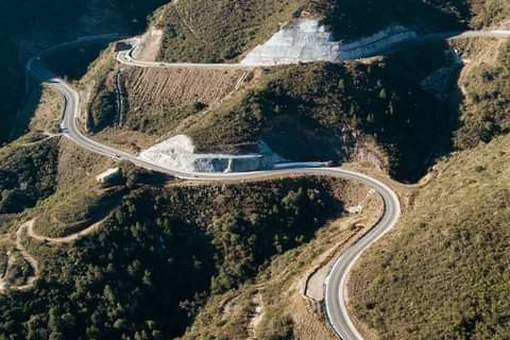
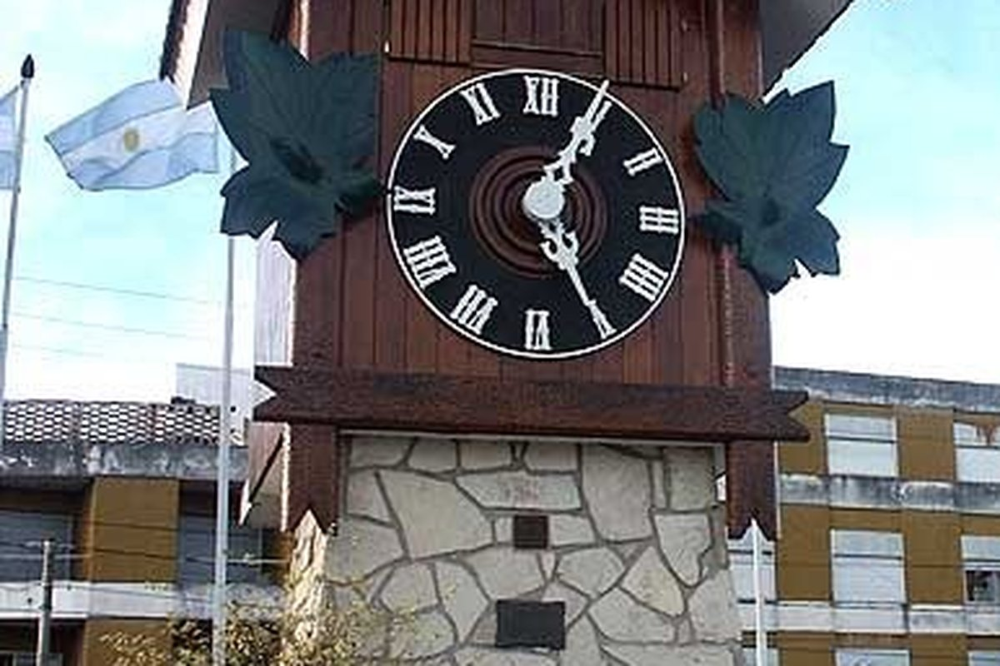

Sierras suaves, ríos cristalinos y pueblos con alma. Córdoba es la opción perfecta para quienes buscan naturaleza accesible, vida nocturna vibrante y rincones cargados de historia. Desde Villa Carlos Paz hasta La Cumbrecita, pasando por las Estancias Jesuíticas, Patrimonio de la Humanidad. Un destino que tiene algo para cada viajero, diseñado a tu medida.


Mina Clavero, La Falda y los ríos serranos para refrescarse en verano.
Pueblos alpinos centroeuropeos enclavados en las sierras con gran gastronomía.
Patrimonio de la Humanidad UNESCO: Alta Gracia, Santa Catalina y más.
El folklore del país en enero y las mejores cervecerías artesanales todo el año.